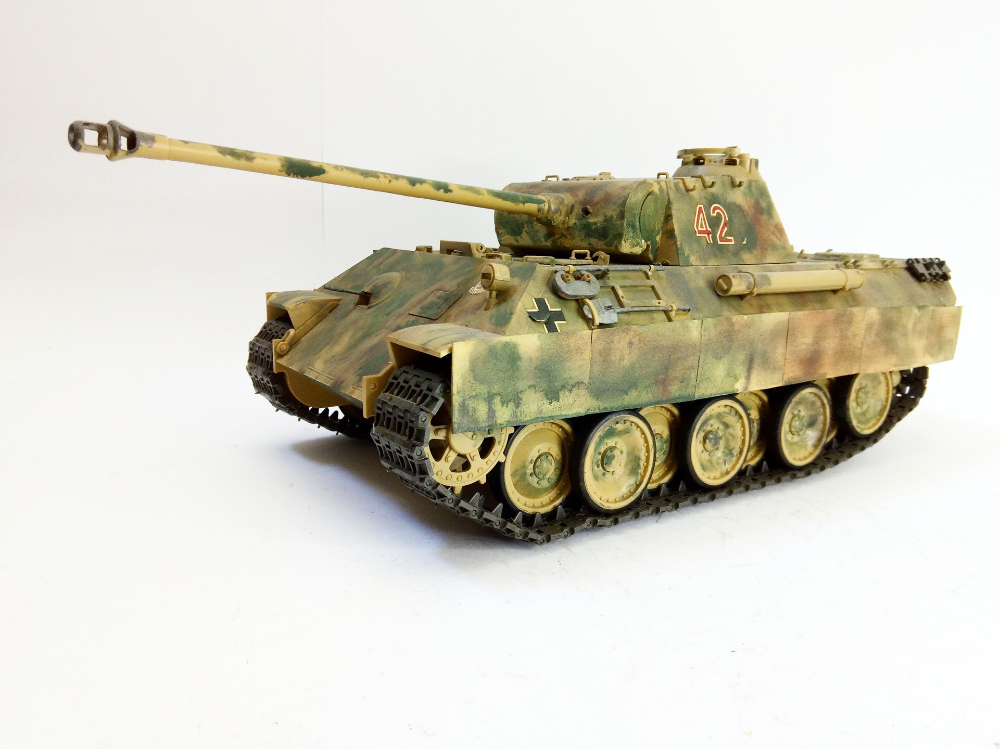
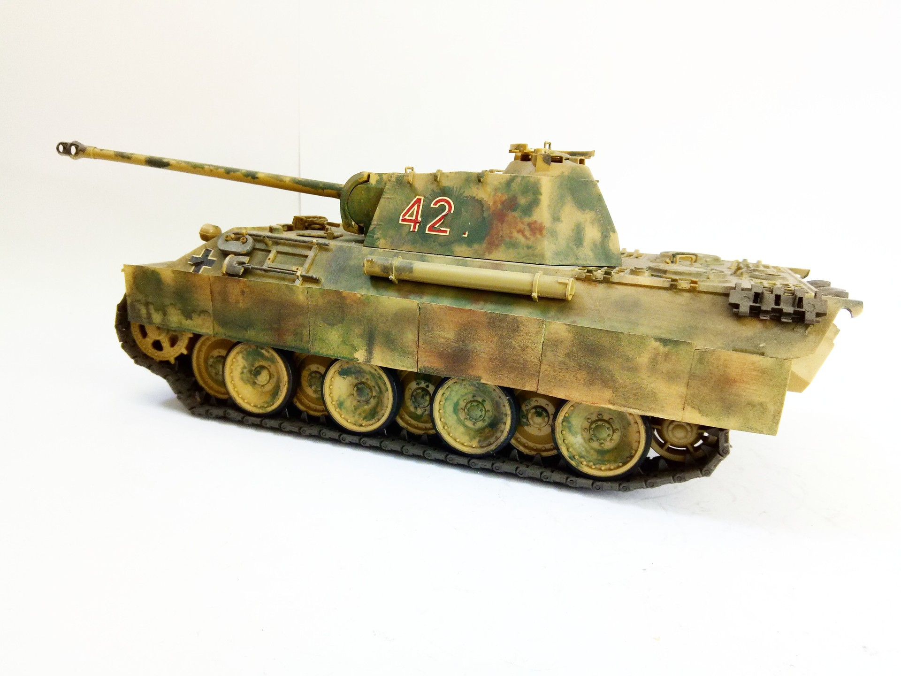

Mezzi militari · scale model archive
Panzerkampfwagen V Panther; Sd.Kfz. 171
Panzerkampfwagen V Panther; Sd.Kfz. 171 — Kit: Tamiya, Scale: 1/25. Conversion to ´chin' type gun mantlet #1/25 #Tamiya

Photo gallery

English description
Conversion to ´chin' type gun mantlet
#1/25 #Tamiya
Descrizione italiana
Conversione una 'chin' type mantelletto del cannone.